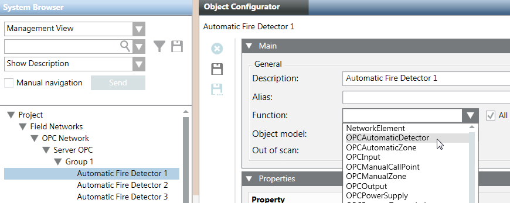

Configuring the OPC Fire Network
- You want to configure the OPC fire network to support a 3rd-party system. To this purpose you must first create and configure and OPC network and then link a function to a data point of the OPC network. For background information, see the reference section.
- System Manager is in Engineering mode.
- System Browser is in Management View.
- Create and configuring an OPC network:
- In Third-party OPC Client, see Configuring Third-party OPC Client Connectivity.
- To use the customized OPC library, you need to link the customized OPC functions to the OPC Network data points. Proceed as follows:
a. In System Browser, select Project > Field Networks > [OPC Network].
b. Select a data point in the structure of the OPC Network.
c. Open the Main expander.
d. From the Function drop-down list, select the OPC function to link to the data point.
NOTE: Unselect the All check box to display the default available function for the selected data point.
e. Click Save .
.
f. Repeat step 2 for all data points of the OPC Network.
